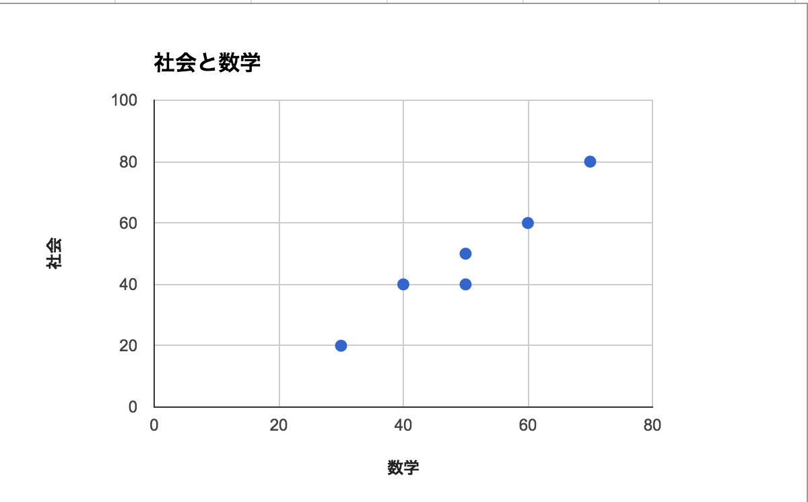

WordPress案件でWebディレクターが気をつけたいこと
株式会社LIG
自己紹介
株式会社LIGというところでWebディレクターをしています
LIGではWordPressを使用することも多く、LIGのサイト自体もWordPressで組まれてます

気をつけたいこと
ものすごく大きく分けると下記の3つになると思っています。
- リニューアル？ 新規制作？
- ステークホルダーのリテラシー・体制は？
- 運用していきたい場所は？
新規制作
正直、新規制作だとそこまで気にすることは少ないと思います。
リニューアル
- 現在のサイトは何で組まれているのか？
- 記事の移行はどのくらいおこなう？
- リニューアルによって追加されるカスタムフィールドへの対応はどうする？
- URLは引き継ぐ？
- リダイレクトはPHPでやる？ Webサーバでやる？
- いまサイトが載っているサーバはどんなの？
ステークホルダーの体制・リテラシーは？
- 更新作業する人は何人くらいいる？
- 記事公開までの社内の承認フローはどんな感じ？
- HTML書ける？
運用していきたい場所は？
- おすすめ記事とかどういうロジックがいい？
- 固定ページは管理画面からいじる？
- meta(title, description)は更新していきたい？
- 記事詳細のスタイルでどんなの必要？
さいごに
要件定義はとても難しい…クライアントと一杯話して想像しても漏れることだらけ…！
でも漏れは誰が悪いとかではないから話し合って両者が納得いくよう進められると幸せになられるはず。